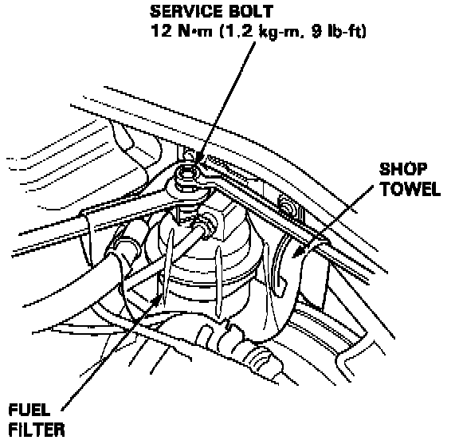

Fuel Pressure Release: Service and Repair
PROCEDUREWarning: Do not smoke while working on the fuel system. Keep open flames or sparks away from your work area. Be sure to relieve fuel pressure while the engine is off.
1. Disconnect the battery negative cable from the battery negative terminal.
NOTE: The radio has a coded theft protection circuit. Be sure you get the customer's code number before disconnecting the battery cable.
2. Remove fuel fill cap.

3. Use a box end wrench on the 6 mm service bolt at the fuel filter, while holding the special banjo bolt with another wrench.
4. Place a rag or shop towel over the 6 mm service bolt.
5. Slowly loosen the 6 mm service bolt one complete turn.
NOTE: Always replace the washer between the service bolt and the special banjo bolt, whenever the service bolt is loosened. Replace all washers whenever the bolts are removed.